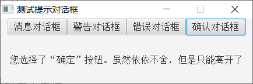

原文连接:https://www.cnblogs.com/pinlantu/p/11415444.html
JavaFX的对话框主要分为提示对话框和文件对话框两类，其中提示对话框又分作消息对话框、警告对话框、错误对话框、确认对话框四种。这四种对话框都使用Alert控件表达，并通过对话框类型加以区分，例如AlertType.INFORMATION表示消息对话框，AlertType.WARNIN表示警告对话框，AlertType.ERROR表示错误对话框，AlertType.CONFIRMATION表示确认对话框。另外，Alert工具还提供了下列方法来操作对话框：
setTitle：设置对话框的标题。
setHeaderText：设置对话框的头部文本。
setContentText：设置对话框的内容文本。
show：显示对话框。
showAndWait：显示对话框，并等待按钮返回。该方法的返回类型是Optional<ButtonType>，它用来描述确认对话框选择的是确定按钮还是取消按钮。
接下来分别列举几种提示对话框的实现例子，首先是消息对话框，它的调用代码示例如下：
Button btn1 = new Button("消息对话框"); // 创建一个按钮
btn1.setOnAction(new EventHandler<ActionEvent>() { // 设置按钮的单击事件
@Override
public void handle(ActionEvent arg0) { // 处理单击事件
Alert alert = new Alert(Alert.AlertType.INFORMATION); // 创建一个消息对话框
alert.setHeaderText("今日天气"); // 设置对话框的头部文本
// 设置对话框的内容文本
alert.setContentText("今天白天晴转多云，北转南风2、3间4级，最高气温28℃；夜间多云转阴，南风2级左右，最低气温16℃。");
alert.show(); // 显示对话框
}
});
flowPane.getChildren().add(btn1); // 往流式窗格上添加按钮
运行包含以上代码的测试程序，单击按钮后弹出的对话框如下图所示，可见消息对话框的提示图标是个内嵌感叹号的圆圈。
其次是警告对话框，它的调用代码示例如下：
Button btn2 = new Button("警告对话框"); // 创建一个按钮
btn2.setOnAction(new EventHandler<ActionEvent>() { // 设置按钮的单击事件
@Override
public void handle(ActionEvent arg0) { // 处理单击事件
Alert alert = new Alert(Alert.AlertType.WARNING); // 创建一个警告对话框
alert.setHeaderText("编译警告"); // 设置对话框的头部文本
// 设置对话框的内容文本
alert.setContentText("您在本代码的第60行未初始化变量，可能导致空指针异常。");
alert.show(); // 显示对话框
}
});
flowPane.getChildren().add(btn2); // 往流式窗格上添加按钮
运行包含以上代码的测试程序，单击按钮后弹出的对话框如下图所示，可见警告对话框的提示图标是个内嵌感叹号的三角框。
再次是错误对话框，它的调用代码示例如下：
Button btn3 = new Button("错误对话框"); // 创建一个按钮
btn3.setOnAction(new EventHandler<ActionEvent>() { // 设置按钮的单击事件
@Override
public void handle(ActionEvent arg0) { // 处理单击事件
Alert alert = new Alert(Alert.AlertType.ERROR); // 创建一个错误对话框
alert.setHeaderText("致命错误"); // 设置对话框的头部文本
// 设置对话框的内容文本
alert.setContentText("系统即将关机，请赶紧保存文件。");
alert.show(); // 显示对话框
}
});
flowPane.getChildren().add(btn3); // 往流式窗格上添加按钮
运行包含以上代码的测试程序，单击按钮后弹出的对话框如下图所示，可见错误对话框的提示图标是个内嵌叉号的圆角方框。

最后是确认对话框，它使用showAndWait方法替换了show方法，具体的调用代码示例如下：
Button btn4 = new Button("确认对话框"); // 创建一个按钮
btn4.setOnAction(new EventHandler<ActionEvent>() { // 设置按钮的单击事件
@Override
public void handle(ActionEvent arg0) { // 处理单击事件
Alert alert = new Alert(Alert.AlertType.CONFIRMATION); // 创建一个确认对话框
alert.setHeaderText("温馨提示"); // 设置对话框的头部文本
// 设置对话框的内容文本
alert.setContentText("尊敬的用户，你真的要卸载我吗？");
// 显示对话框，并等待按钮返回
Optional<ButtonType> buttonType = alert.showAndWait();
// 判断返回的按钮类型是确定还是取消，再据此分别进一步处理
if (buttonType.get().getButtonData().equals(ButtonBar.ButtonData.OK_DONE)) { // 单击了确定按钮OK_DONE
label.setText("您选择了“确定”按钮。虽然依依不舍，但是只能离开了");
} else { // 单击了取消按钮CANCEL_CLOSE
label.setText("您选择了“取消”按钮。让我再陪你三百六十五个日夜");
}
}
});
flowPane.getChildren().add(btn4); // 往流式窗格上添加按钮
运行包含以上代码的测试程序，单击按钮后弹出的对话框如下图所示，可见确认对话框的提示图标是个内嵌问号的圆圈。
各自单击确认对话框上的确定按钮和取消按钮，对话框消失后的窗口界面分别如下面两张图所示。

除了提示对话框这一大类，还有文件对话框FileChooser，它又细分为文件打开对话框与文件保存对话框两种，FileChooser的常见方法说明如下：
setTitle：设置文件对话框的标题。
setInitialDirectory：设置文件对话框的初始目录。
getExtensionFilters：获得文件对话框的扩展过滤器。调用过滤器的add方法或者addAll方法可以添加新的文件类型过滤器。
showOpenDialog：显示文件打开对话框。该方法返回一个选中的文件对象。
showOpenMultipleDialog：显示文件打开对话框，且该对话框支持同时选择多个文件。该方法返回一个选中的文件清单。
showSaveDialog：显示文件保存对话框。该方法返回一个待保存的文件对象，文件可能存在也可能不存在。
接着看个文件对话框的运用场景，现在准备打开某张图片，以便对该图片进行加工。鉴于图片文件包含jpg、gif、bmp、png等多种格式，在创建文件类型过滤器时得添加主要的几种图片扩展名，下面便是打开图片的对话框调用代码例子：
Button btn1 = new Button("文件打开对话框"); // 创建一个按钮
btn1.setOnAction(new EventHandler<ActionEvent>() { // 设置按钮的单击事件
@Override
public void handle(ActionEvent arg0) { // 处理单击事件
FileChooser chooser = new FileChooser(); // 创建一个文件对话框
chooser.setTitle("打开文件"); // 设置文件对话框的标题
chooser.setInitialDirectory(new File("E:\\")); // 设置文件对话框的初始目录
// 给文件对话框添加多个文件类型的过滤器
chooser.getExtensionFilters().addAll(
new FileChooser.ExtensionFilter("所有文件", "*.*"),
new FileChooser.ExtensionFilter("所有图片", "*.jpg", "*.gif", "*.bmp", "*.png"));
// 显示文件打开对话框，且该对话框支持同时选择多个文件
File file = chooser.showOpenDialog(stage); // 显示文件打开对话框
if (file == null) { // 文件对象为空，表示没有选择任何文件
label.setText("未选择任何文件");
} else { // 文件对象非空，表示选择了某个文件
label.setText("准备打开的文件路径是："+file.getAbsolutePath());
}
}
});
flowPane.getChildren().add(btn1); // 往流式窗格上添加按钮
运行包含以上代码的测试程序，单击按钮后弹出的对话框如下图所示。

在文件对话框中选择某个目录下的某个图片文件，此时对话框界面如下图所示。
然后单击确定按钮，回到主程序的窗口界面如下图所示，可见主程序成功获取到了该文件的完整路径。
再来验证文件保存对话框的使用过程，这次期望将一段文字保存到文本文件，那么具体实现的对话框代码如下所示：
Button btn2 = new Button("文件保存对话框"); // 创建一个按钮
btn2.setOnAction(new EventHandler<ActionEvent>() { // 设置按钮的单击事件
@Override
public void handle(ActionEvent arg0) { // 处理单击事件
FileChooser chooser = new FileChooser(); // 创建一个文件对话框
chooser.setTitle("保存文件"); // 设置文件对话框的标题
chooser.setInitialDirectory(new File("E:\\")); // 设置文件对话框的初始目录
// 创建一个文件类型过滤器
FileChooser.ExtensionFilter filter = new FileChooser.ExtensionFilter("文本文件(*.txt)", "*.txt");
// 给文件对话框添加文件类型过滤器
chooser.getExtensionFilters().add(filter);
File file = chooser.showSaveDialog(stage); // 显示文件保存对话框
if (file == null) { // 文件对象为空，表示没有选择任何文件
label.setText("未选择任何文件");
} else { // 文件对象非空，表示选择了某个文件
label.setText("准备保存的文件路径是："+file.getAbsolutePath());
}
}
});
flowPane.getChildren().add(btn2); // 往流式窗格上添加按钮
运行包含以上代码的测试程序，单击按钮后弹出的对话框如下图所示。
在文件对话框中进入到指定目录，并在对话框下方的文件名一栏填写待保存的文件名称，此时对话框界面如下图所示。
然后单击确定按钮，回到主程序的窗口界面如下图所示，可见主程序也获取到了该文件的完整路径。
更多Java技术文章参见《Java开发笔记（序）章节目录》